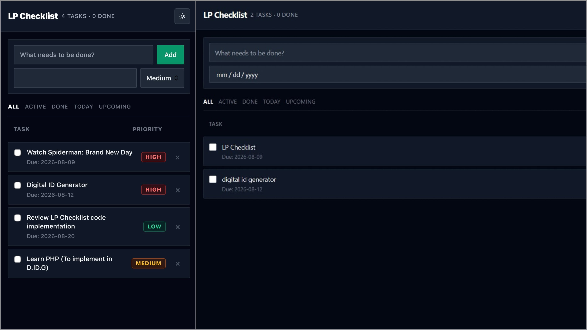
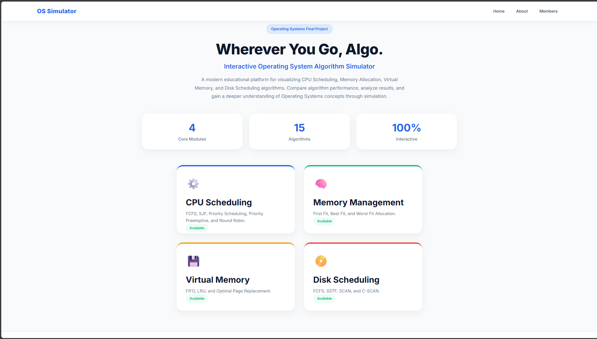
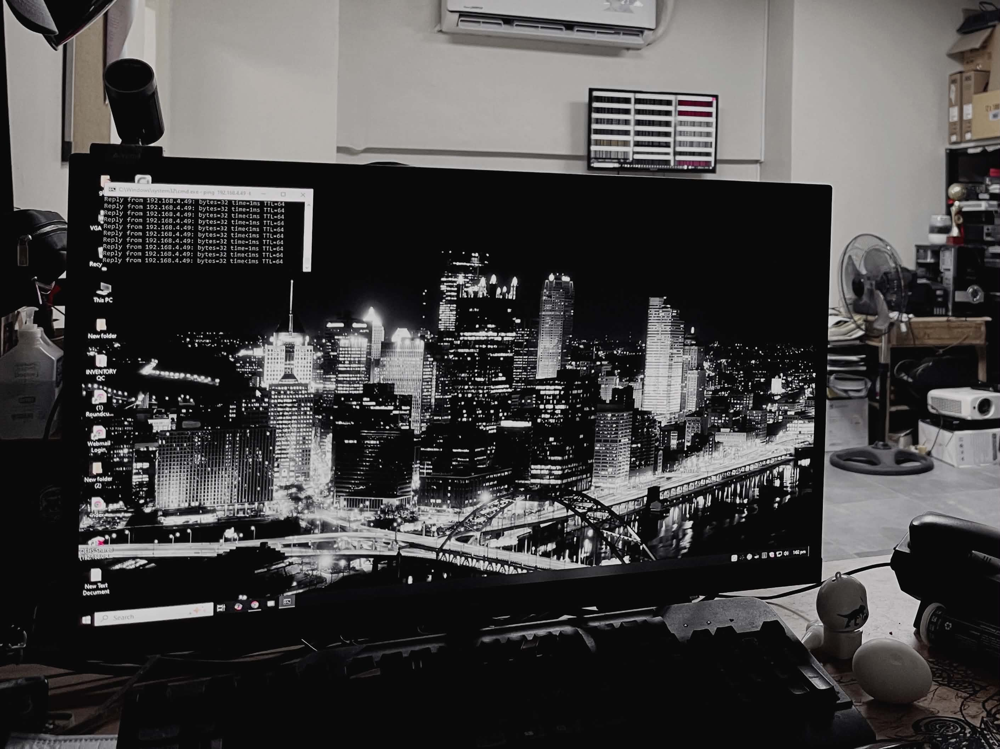
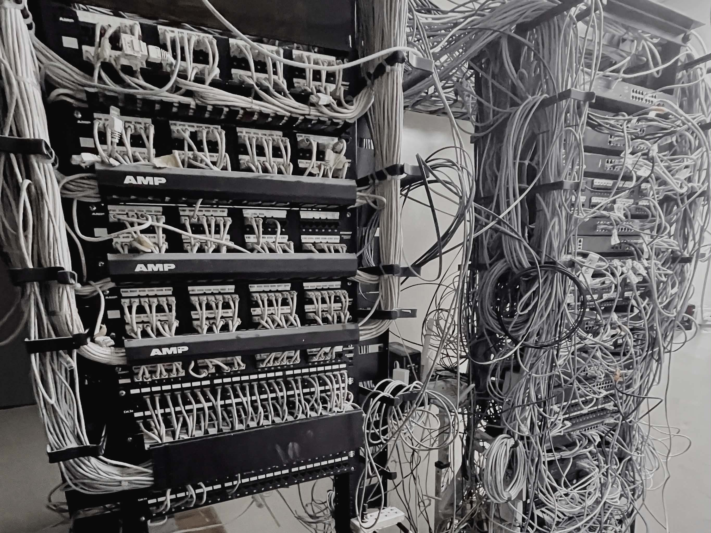
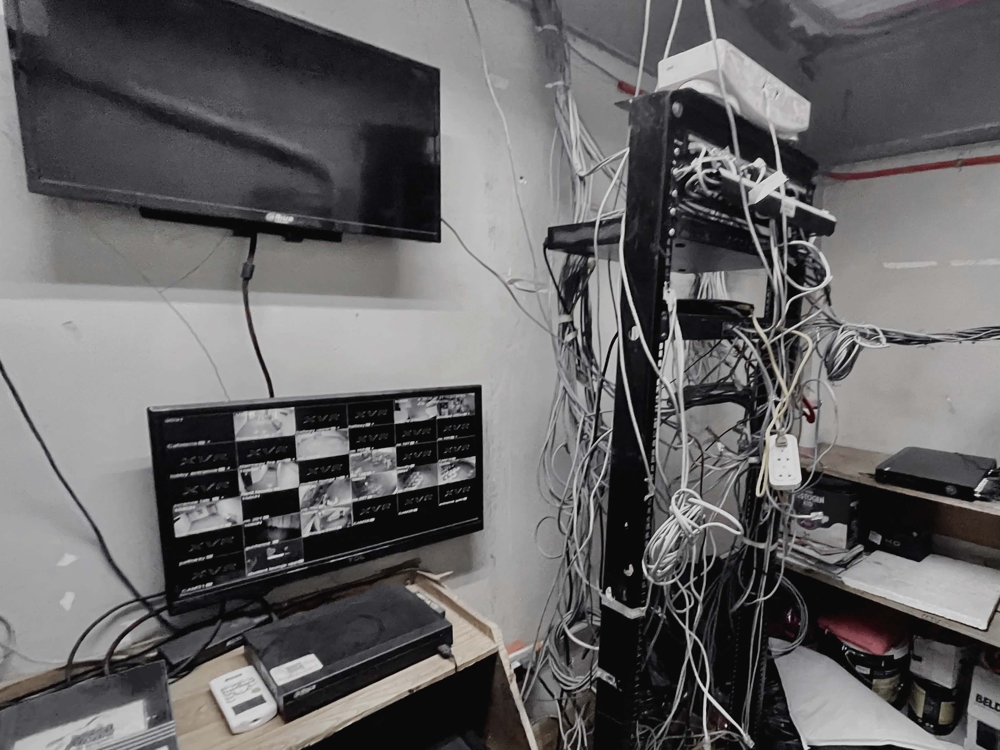
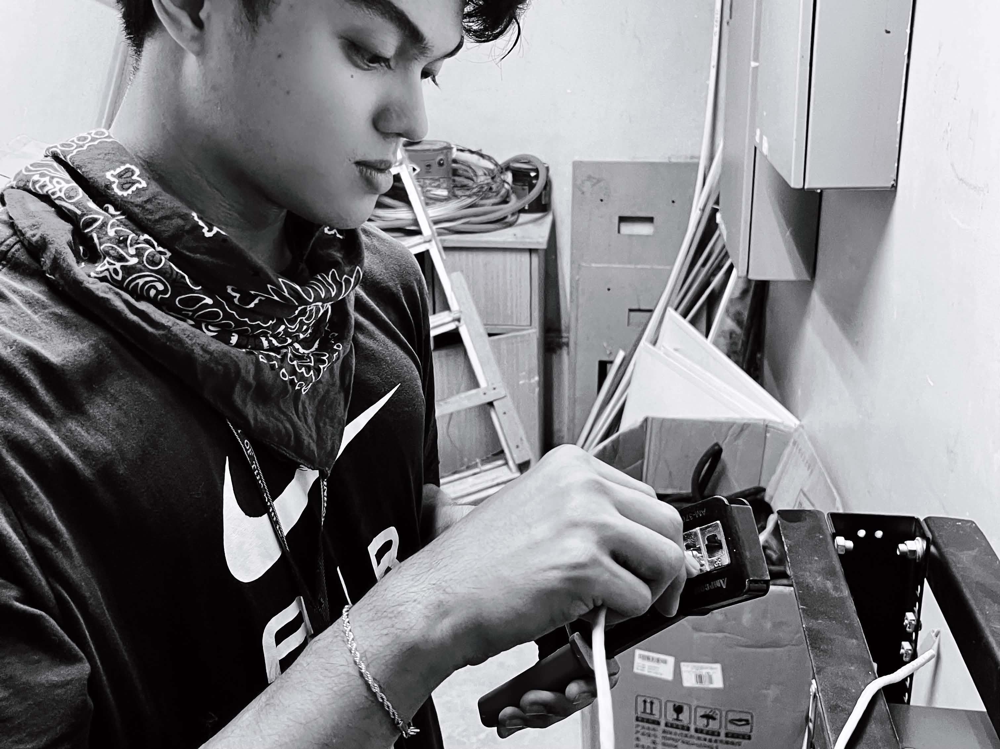
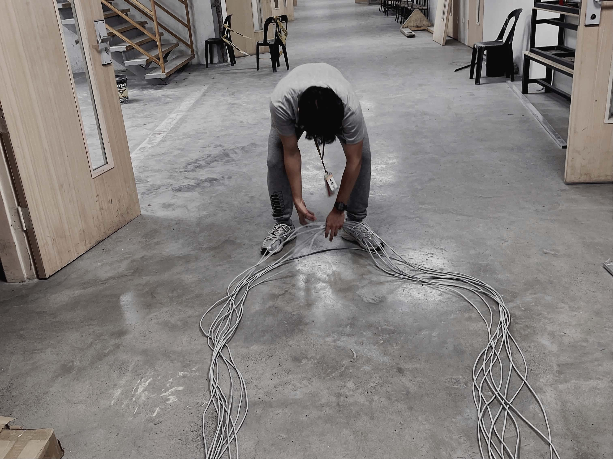
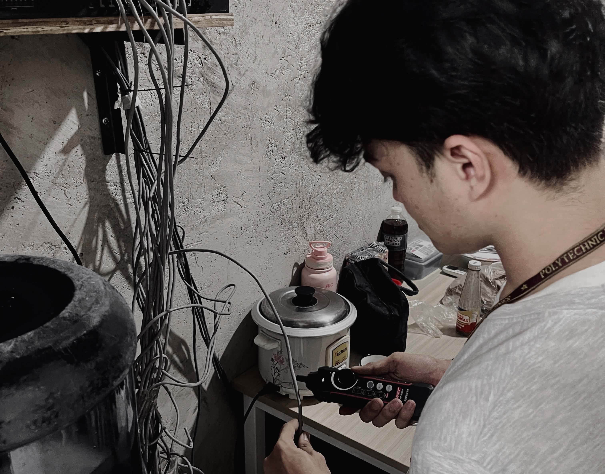
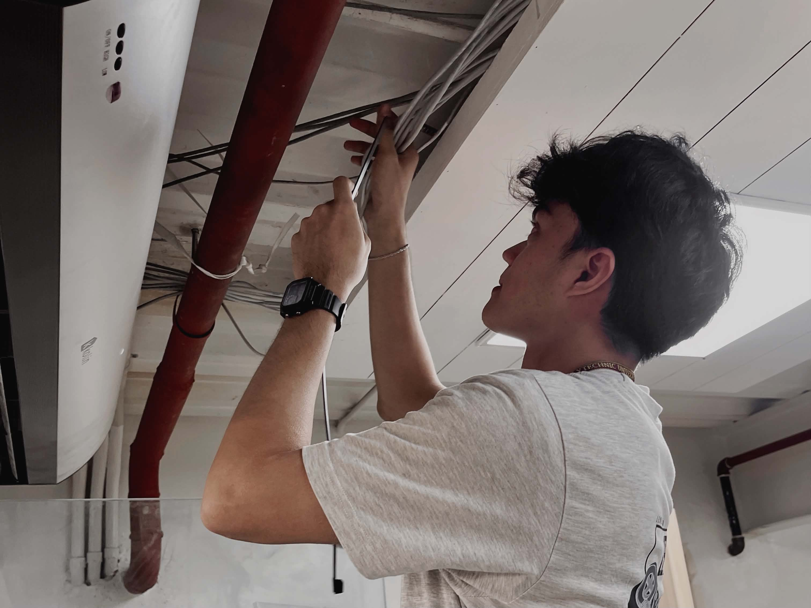

<section id="works">

    <div class="works-container">

        <div class="works-header-row" data-animate>
            <span class="featured-label">FEATURED PROJECTS</span>

            <!-- PROJECT NAVIGATION -->
            <div class="project-carousel-nav" aria-label="Project navigation">
                <button class="carousel-arrow" id="projPrev" type="button" aria-label="Previous project">←</button>
                <span class="carousel-counter" id="projCounter" aria-live="polite">01 / 03</span>
                <button class="carousel-arrow" id="projNext" type="button" aria-label="Next project">→</button>
            </div>
        </div>

        <!-- STACKED PROJECT DISPLAY CONTAINER -->
        <div class="project-display-stage" data-animate>

            <!-- PROJECT CARD 0 -->
            <div class="featured-project-card active" data-proj-index="0">

                <div class="fp-image">
                    
                    <div class="fp-image-overlay">
                        <h3>LP Checklist</h3>
                        <span>Solo · Personal</span>
                    </div>
                </div>

                <div class="fp-details">
                    <span class="fp-label">PROJECT DESCRIPTION</span>
                    <p class="fp-desc">
                        A personal task and reminder dashboard designed to keep Linden’s daily work, priorities, and
                        projects organized in one place. This includes inputting tasks, setting due dates, and being
                        able to mark tasks as complete.
                    </p>

                    <span class="fp-label">KEY FEATURES</span>
                    <ul class="fp-features">
                        <li>Create, organize, and track tasks.</li>
                        <li>Keep important deadlines and priorities visible.</li>
                        <li>Get a quick overview of tasks and daily progress.</li>
                    </ul>

                    <span class="fp-label">TECH STACK</span>
                    <div class="fp-stack">
                        <span>HTML</span>
                        <span>Tailwind CSS</span>
                        <span>JavaScript</span>
                        <span>JSON</span>
                    </div>
                </div>

                <span class="fp-number">01</span>

                <a href="https://lpchecklist.vercel.app/" class="fp-try-btn" target="_blank" rel="noopener noreferrer">
                    TRY ME <i class="fa-solid fa-arrow-up-right-from-square"></i>
                </a>

            </div>

            <!-- PROJECT CARD 1 -->
            <div class="featured-project-card" data-proj-index="1">

                <div class="fp-image">
                    
                    <div class="fp-image-overlay">
                        <h3>OS Simulator</h3>
                        <span>Group · Academic</span>
                    </div>
                </div>

                <div class="fp-details">
                    <span class="fp-label">PROJECT DESCRIPTION</span>
                    <p class="fp-desc">
                        Operating System Simulator: A complete simulator featuring CPU Scheduling,
                        Memory Management, Virtual Memory, and Disk Scheduling algorithms with
                        interactive visualizations built as a web application.
                    </p>

                    <span class="fp-label">KEY FEATURES</span>
                    <ul class="fp-features">
                        <li>Multiple CPU scheduling algorithms (FCFS, SJF, Priority, Round Robin)</li>
                        <li>Memory management with paging and segmentation</li>
                        <li>Interactive visual animations for each algorithm</li>
                    </ul>

                    <span class="fp-label">TECH STACK</span>
                    <div class="fp-stack">
                        <span>Python</span>
                        <span>Flask</span>
                        <span>HTML</span>
                        <span>CSS</span>
                        <span>JavaScript</span>
                    </div>
                </div>

                <span class="fp-number">02</span>

                <!-- <a href="#" class="fp-try-btn" target="_blank" rel="noopener noreferrer">
                    TRY ME <i class="fa-solid fa-arrow-up-right-from-square"></i>
                </a> -->

            </div>

            <!-- PROJECT CARD 2 -->
            <div class="featured-project-card" data-proj-index="2">

                <div class="fp-image">
                    
                    <div class="fp-image-overlay">
                        <h3>DSA Visualizer</h3>
                        <span>Solo developer · Academic</span>
                    </div>
                </div>

                <div class="fp-details">
                    <span class="fp-label">PROJECT DESCRIPTION</span>
                    <p class="fp-desc">
                        DSA Visualizer: Interactive visualizers for Binary Trees, Binary Search Trees,
                        Queue systems, and multiple sorting algorithms used in Data Structures courses,
                        with step-by-step animation.
                    </p>

                    <span class="fp-label">KEY FEATURES</span>
                    <ul class="fp-features">
                        <li>Binary Tree and BST insertion, traversal and deletion</li>
                        <li>Sorting algorithm comparisons (Bubble, Quick, Merge, etc.)</li>
                        <li>Step-by-step animated visualization</li>
                    </ul>

                    <span class="fp-label">TECH STACK</span>
                    <div class="fp-stack">
                        <span>Python</span>
                        <span>BST</span>
                        <span>Sorting</span>
                    </div>
                </div>

                <span class="fp-number">03</span>

                <!-- <a href="#" class="fp-try-btn" target="_blank" rel="noopener noreferrer">
                    TRY ME <i class="fa-solid fa-arrow-up-right-from-square"></i>
                </a> -->

            </div>

        </div>

        <!-- HARDWARE GALLERY -->
        <section class="hardware-gallery" data-animate>

            <div class="hardware-gallery-header">
                <div>
                    <span class="featured-label">HARDWARE & TECHNICAL WORK</span>
                    <h2>HANDS-ON PROJECTS</h2>
                </div>

                <span class="hardware-gallery-count">
                    FIELD WORK / 2024 — PRESENT
                </span>
            </div>

            <div class="hardware-gallery-grid">

                <figure class="hardware-photo">
                    
                    <figcaption>
                        <span>01</span>
                        TECH SUPPORT
                    </figcaption>
                </figure>

                <figure class="hardware-photo">
                    
                    <figcaption>
                        <span>02</span>
                        SERVER
                    </figcaption>
                </figure>

                <figure class="hardware-photo">
                    
                    <figcaption>
                        <span>03</span>
                        TROUBLESHOOTING
                    </figcaption>
                </figure>

                <figure class="hardware-photo">
                    
                    <figcaption>
                        <span>04</span>
                        STUDENT MANAGEMENT
                    </figcaption>
                </figure>

                <figure class="hardware-photo">
                    
                    <figcaption>
                        <span>05</span>
                        CRIMPING
                    </figcaption>
                </figure>

                <figure class="hardware-photo">
                    
                    <figcaption>
                        <span>06</span>
                        NETWORK CABLING
                    </figcaption>
                </figure>

                <figure class="hardware-photo">
                    
                    <figcaption>
                        <span>07</span>
                        TRACING
                    </figcaption>
                </figure>

                <figure class="hardware-photo">
                    
                    <figcaption>
                        <span>08</span>
                        CABLE MANAGEMENT
                    </figcaption>
                </figure>

            </div>

        </section>

    </div>

    </div>

</section>